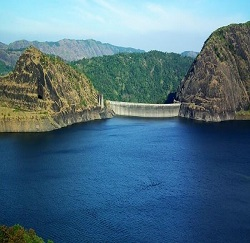
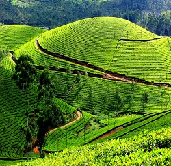
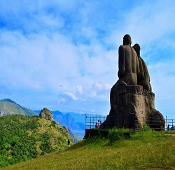

The Idukki Dam is a double curvature Arch dam constructed across the Periyar River in a narrow gorge between two granite hills locally known as Kuravan and Kurathi in Kerala, India. At 168.91 metres, it is one of the highest arch dams in Asia. It is constructed and owned by the Kerala State Electricity Board
Read moreA tea garden is a garden associated with the drinking of tea. Types include: a roji, surrounding a Japanese teahouse and associated with the Japanese tea ceremony a pleasure garden designed for the drinking of tea and for strolling a garden at a teahouse
Read moreRamakkalmedu is a hill station and a hamlet in Idukki district in the Indian state of Kerala. The place is noted for its panoramic beauty and numerous windmills.
Read more